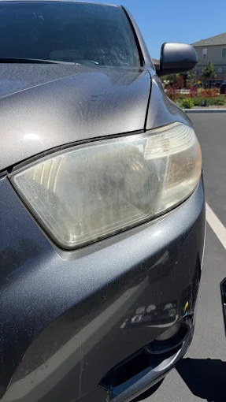
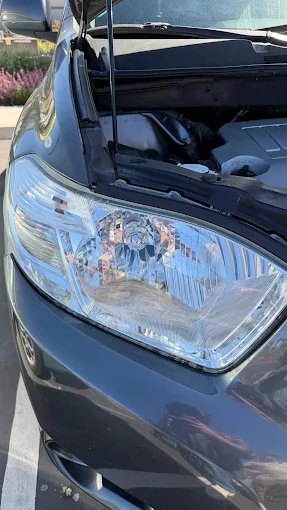
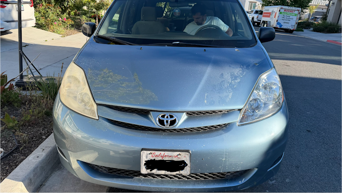

Monterey · Carmel · Pacific Grove · Seaside · Hollister
BayHeadlightsMobile Headlight Restoration on the Monterey Bay Coast
Salt air and coastal sun cloud a headlight faster than they do inland. We come to you — home or office — and get it back to clear, bright, and road-legal in under an hour, because your schedule matters more than ours.
Services
Your time is worth more than a waiting room. That’s why we come to you — driveway, office lot, wherever your car is parked.
Standard Restoration
Wet-sand and polish that clears haze and yellowing back to factory clarity. No coating, so it’s our most affordable plan.
$79 / pair · ~45 minPremium + UV Sealant
Everything in Standard, plus a UV-resistant sealant that holds clarity far longer against coastal sun and salt. Our most popular plan.
$119 / pair · ~60 minCeramic Coating Restoration
A ceramic top coat for the longest-lasting clarity we offer — built to hold up for years, not months.
$179 / pair · ~75 minMaintenance Restoration
A quick recoat for lenses we’ve already restored — keeps that clarity going without a full redo.
$45 / pair · ~20 minRecent restorations

Before
AfterSUV headlight
Full restoration, same visit
Toyota Sienna
On-location restorationMore added after every job.
How a restoration goes
-
1
Inspect & tape
We check oxidation depth and mask the surrounding paint and trim.
-
2
Wet-sand
Progressive grits strip the damaged coating without touching the lens beneath.
-
3
Polish
Compound is buffed to a clear, glass-like finish by hand and machine.
-
4
UV seal
A marine-grade sealant locks in the clarity against sun and salt air.
-
5
Final check
Beam pattern is tested against a wall at range before you drive off.
Where We Work
We come to you
There is no shop to drive to. We meet you at home, at the office, or wherever the car is already parked.
- Monterey
- Pacific Grove
- Carmel
- Seaside
- Hollister
Just outside these towns? Get in touch — we will tell you straight away whether we can reach you.
Free Estimate
Send a photo, get a quote
Text us a picture of your headlights and we’ll send back a price — usually the same day.
- Phone
- (831) 833-9309
- bayheadlights@gmail.com
- @bayheadlights
- Availability
- By appointment — call or email to find a time
Attach a photo before you send — or just call